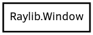

Window
Object Hierarchy:

Description:
[ Compact ]
public class Window
Window object encapsulating static window related functions
Unless I'm mistaken, only a single Raylib window can exist at once. For this reason (I presume) the C API does not expose a struct or
handle to the current Window apart from with one method.
Because of this it really feels like we should implement a Window class but the best I can come up with is static methods to group the
functionality together. There may be a better way?
Content:
Static methods:
- public static void close ()
Close window and unload OpenGL context
- public static Vector2 get_position ()
Get window position XY on monitor
- public static void hide ()
Hide the window
- public static void init (int width, int height, string title)
Initialize window and OpenGL context
- public static bool is_fullscreen ()
Check if window is currently fullscreen
- public static bool is_hidden ()
Check if window is currently hidden
- public static bool is_minimized ()
Check if window has been minimized (or lost focus)
- public static bool is_ready ()
Check if window has been initialized successfully
- public static bool is_resized ()
Check if window has been resized
- public static void set_min_size (int width, int height)
Set window minimum dimensions (for FLAG_WINDOW_RESIZABLE)
- public static void set_monitor (int monitor)
Set monitor for the current window (fullscreen mode)
- public static void set_position (int x, int y)
Set window position on screen (only PLATFORM_DESKTOP)
- public static void set_size (int width, int height)
Set window dimensions
- public static void set_title (string title)
Set title for window (only PLATFORM_DESKTOP)
- public static bool should_close ()
Check if KEY_ESCAPE pressed or Close icon pressed
- public static void toggle_fullscreen ()
Toggle fullscreen mode (only PLATFORM_DESKTOP)
- public static void unhide ()
Show the window